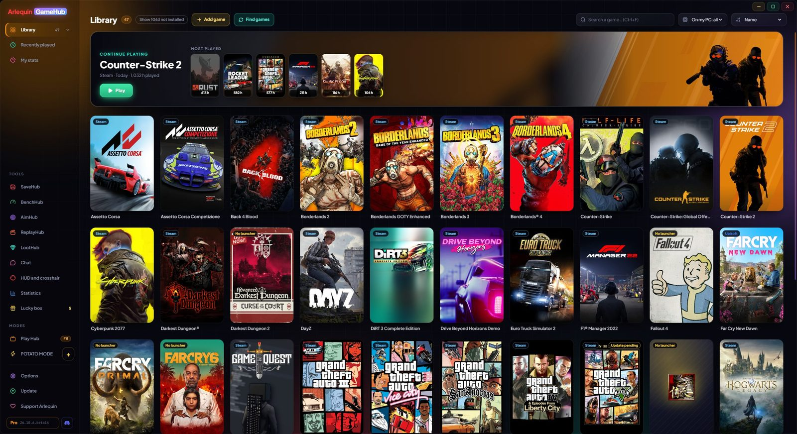

Tota la teva biblioteca en un sol lloc
Steam, Epic, GOG, Xbox, Ubisoft, EA, Battle.net, Amazon, Rockstar i jocs que no tenen llançador, tot junt.
GameHub mira el que ja tens al teu PC: les carpetes i els fitxers que desa el llançador de cada botiga. Així troba els teus jocs instal·lats i també els que tens però no has instal·lat, amb les seves portades i les hores que hi has jugat. Les hores es compten encara que obris el joc des del seu propi llançador.
A la barra lateral, fer clic a Biblioteca obre les teves botigues amb quants jocs tens a cadascuna (també les que tenen l'aplicació instal·lada encara que no hi tinguin jocs). Pots ordenar per nom, per última partida, per hores o per mida, cercar a l'instant i veure què has jugat fa poc.
Els jocs sense llançador (un emulador, un joc d'itch.io…) s'afegeixen amb el botó «Afegeix un joc», o li dius a GameHub quines carpetes tenen els teus jocs solts i els troba sol. Busca la portada oficial de Steam també per a jocs d'altres botigues, afegits a mà o retirats de la botiga; si no n'hi ha, fa servir la icona del joc, i sempre hi pots posar la teva pròpia imatge.
Un joc que tens a diverses botigues o a la mateixa carpeta només surt una vegada. I si Steam està actualitzant un joc, ho veus a la seva targeta («Actualitzant 45 %» o «Actualització pendent»).
Les actualitzacions de Steam i les baixades d'Epic (instal·lació o actualització) mostren el % real, la velocitat i el temps que falta a la part de baix de la targeta, on normalment hi ha «Juga»; fer-hi clic obre Steam o Epic. Si una baixada es queda parada, mostra «En pausa».
Botigues noves: Riot (League of Legends, VALORANT, TFT…), HoYoPlay (Genshin, Star Rail, Zenless…), Wargaming (World of Tanks…), Ankama (Dofus, Wakfu…) i Gameforge (Metin2, NosTale…), amb les hores de cada personatge de Dofus. Els jocs de consola de GOG Galaxy (PlayStation, Nintendo) tenen la seva pròpia secció i es poden amagar, i a Opcions → Biblioteca pots treure les botigues que no vulguis i triar-ne l'ordre a la barra lateral.
Si es cola alguna cosa que no és un joc (un programa, un servidor…), la treus i GameHub n'aprèn. La pots recuperar a Opcions → Biblioteca.
Mai demana la contrasenya de cap botiga: per jugar, obre cada joc amb el seu propi llançador, com si l'haguessis obert tu.
Els teus jocs d'Xbox / Microsoft Store i d'Ubisoft surten encara que no estiguin instal·lats, i els jocs de Game Pass es poden amagar. Les sèries s'ordenen per data de llançament, i les portades i els fons es desen al teu PC: surten a l'instant, fins i tot sense connexió.
Com es fa servir
- Obre'l i espera uns segons: els teus jocs surten sols.
- Doble clic o el botó «Juga» (sota la portada) per obrir un joc.
- «Mostra N no instal·lats» també mostra els que no has instal·lat.
- «Cerca jocs» torna a revisar les teves botigues a l'instant.
- Els personatges de Dofus van per servidor: quan tanques el joc, GameHub esbrina en quin has jugat o te'l pregunta, les targetes s'agrupen per servidor i pots moure hores a un altre servidor.

Vols provar-lo?
⬇ Baixada directa 🛍️ Baixa'l de Microsoft StoreWindows 10 i 11 (64 bits) · Gratuït · S'actualitza sol